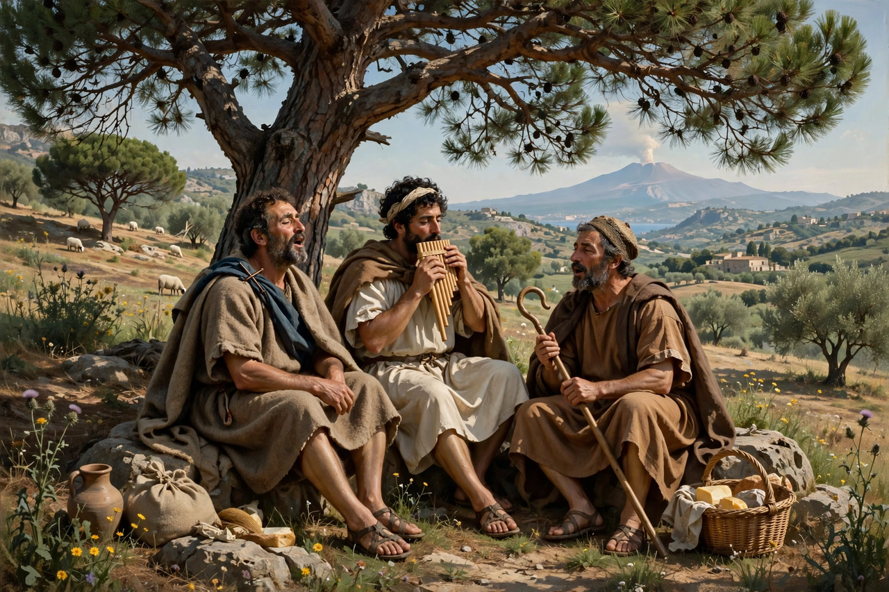

Theocritus (c. 300 – after c. 260 BC) was a Greek poet from Syracuse in Sicily, the creator of ancient pastoral poetry. His Idylls — short poems in hexameters, several of them dialogues between herdsmen in an idealised countryside — founded the bucolic tradition that runs through Virgil's Eclogues to Renaissance and Romantic pastoral.
| Theocritus | |
|---|---|
| Born | c. 300 BC, Syracuse, Sicily |
| Died | After c. 260 BC |
| Genre | Pastoral (bucolic) poetry, mime, hymn |
| Major works | Idylls, esp. 1, 7, 11, 15 |
Little is known for certain. Theocritus wrote in Syracuse under Hieron II, spent time on the island of Kos, and later sought patronage at the court of Ptolemy II Philadelphus in Alexandria, whom he praised in Idyll 17. His poems mingle Doric dialect with Homeric epic language, a hallmark of his learned, artful style.
About thirty poems survive under his name, not all genuine. Idyll 1, the lament of Thyrsis for the dying herdsman Daphnis, became the model for the pastoral elegy. Idyll 7, the "Harvest Festival", is a sophisticated first-person poem of poets meeting on Kos and is often judged his finest. Idyll 11 gives the lovesick Cyclops Polyphemus a comic-tender song for the sea-nymph Galatea, while Idyll 15, the "Women at the Adonis Festival", is a vivid urban mime set in Alexandria — proof that his range extended far beyond shepherds. His miniature epic on the infant Heracles (Idyll 24) and epigrams show the same polish.
Theocritus effectively invented the pastoral mode: an artificial countryside of song, shade and desire, created by and for sophisticated urban readers. Virgil acknowledged the debt directly, and the tradition passed through Sannazaro, Spenser, Milton's Lycidas and Shelley, making the Sicilian poet one of the most quietly influential figures in European literature.